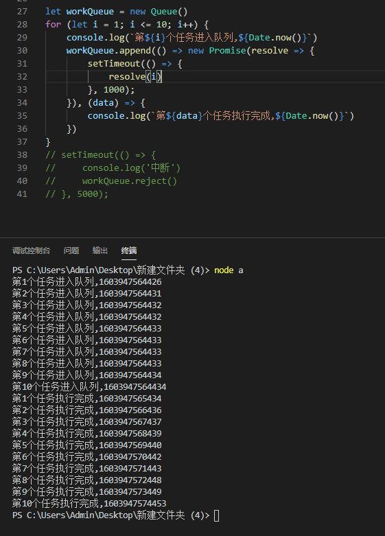
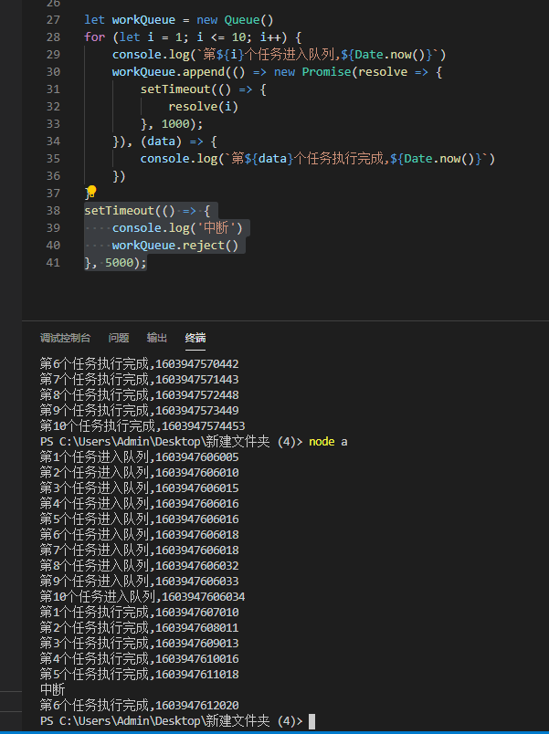

全局的异步任务队列
举个栗子 当你找到一个免费接口，1分钟限制调用次数10次的时候 当你有一个耗费大量前端资源多个任务同时执行会导致内存溢出的时候
大概意思就是我想让这个任务排队执行，或者延迟执行，又不想把逻辑写到组件里 我想要的是，随时可以把任务插进队列，队列中的任务会等待前一个任务完成再执行，任务完成后callback,还需要一个reject中断任务
写一个任务队列
// 任务队列
function Queue() {
this.queue = []
}
// 往队列里增加一项任务
Queue.prototype.append = async function (getWork, callback) {
// 判断这是否是队列中的第一项
if (this.queue.length === 0) {
this.queue.push({ getWork, callback })
await this.go()
} else {
this.queue.push({ getWork, callback })
}
}
Queue.prototype.go = async function () {
if (this.queue.length !== 0) {
const { getWork, callback } = this.queue[0]
callback(await getWork())
this.queue.splice(0, 1)
await this.go()
}
}
Queue.prototype.reject = async function () {
this.queue = []
}
// 测试
let workQueue = new Queue()
for (let i = 1; i <= 10; i++) {
console.log(`第${i}个任务进入队列,${Date.now()}`)
workQueue.append(() => new Promise(resolve => {
setTimeout(() => {
resolve(i)
}, 1000);
}), (data) => {
console.log(`第${data}个任务执行完成,${Date.now()}`)
})
}
// setTimeout(() => {
// console.log('中断')
// workQueue.reject()
// }, 5000);
测试一下

测试一下中断
还是callback 第六次了😂，凑合用把